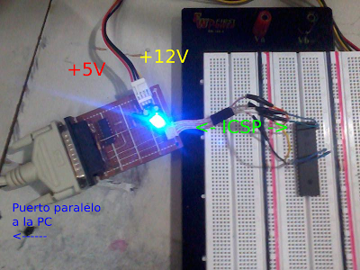
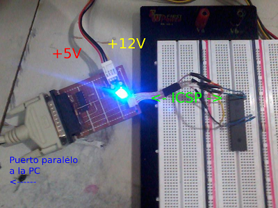

Programando PIC's en GNU/Linux (hardware y software)
Para esto usaremos el protocolo ICSP, que es especifico de los microcontroladores PIC de Microchip. Este protocolo nos permitirá comunicarnos desde la computadora con el uC para entregarle el binario del programa que queremos almacene en su memoria.
Primero necesitamos algo de hardware para conectar la PC y el uC, y el software que implemente debidamente el protocolo ICSP, y que nos permita llevar a cabo el cometido.
Hardware
El protocolo ICSP emplea 5 pines del uC, que son:
Vss Masa o GNDVdd Alimentación de +5VVpp Alimentación de +13.2V. En la mayoría de los casos nos bastará con +12V. Se usa para indicarle al uC que empezaremos a comunicarnos con él mediante ICSPData Señal de datos de entrada y salida, TTLClock Señal de reloj, TTL
El hardware hace uso del puerto paralelo de la PC, seguramente esto será un impedimento para muchos, pero existe una gran posibilidad de que si andas en estas cosas, tendrás un PC viejito que tenga puerto paralelo, la ventaja es que el hardware que construiremos es muy barato y simple.
- En el diseño los pines verde etiquetados como
PPx (donde x es un número) corresponden con los pines del puerto paralelo. Así, el pin PP2 se conecta en el pin #2 del puerto paralelo.
- En el diseño los pines que terminan en un pequeño circulo y que tienen una etiqueta son los cables que irán finalmente a los pines ICSP del uC (PIC) [Vpp,Vdd,Data,Clock].

Software
Ahora bien, tenemos el hardware construido y debidamente conectado. Necesitamos el software (para sistemas *unix, GNU/Linux en nuestro caso) para interactuar con el uC (PIC) mediante el protocolo ICSP.
Para esto usaremos el software Odyssey que podemos descargar de aquí: Odyssey
Lo instalamos:
$ tar -jxvf odyssey-0.6.tar.bz2 $ cd odyssey-0.6 $ ./configure
$ make
$ sudo make install
Necesitamos indicarle a Odyssey que drivers usar, que puerto usar, que pines del puerto usar, he incluso si la lógica de algún pin está invertida:
[io]
driver=linuxppdev
port=0
[signaldelay]
default=1000
clkpin=3
rdatapin=10
wdatapin=2
vpppin=-6
pwrpin=4 # No usado en este circuito
Lo guardamos en un fichero de nombre odyssey.conf, y lo ubicamos en su lugar con:
# mv odyssey.conf /usr/local/etc/
Luego, ejecutando
$ odyssey test
Obtendremos una ventana que esperará nuestras instrucciones y nos indicará que pin esta encendido (1) o apagado (0). Una vez aquí podremos probar los respectivos pines activándolos con un signo (+) y desactivándolos con un signo (-)
- Vpp = v
- Data = d
- Clock = c
De esta forma, para activar el pin Vpp usamos +v y lo desactivamos usando -v.
Luego de hacer varias pruebas y estar seguros de que todo funciona según lo esperado, podemos conectarlo a los pines correspondientes del uC.
Para verificar si Odyssey se comunica bien con el PIC, y si el PIC que le indicamos se corresponde con el que hemos colocado:
$ odyssey PIC18F4550 check
Nótese que las letras contenidas en el nombre del PIC son en mayúsculas
Para borrar el programa del PIC:
$ odyssey PIC18F4550 erase
Para verificar si el PIC está en blanco (vacío):
$ odyssey PIC18F4550 blankcheck
Para grabar un programa (programa.hex) [compilado] en el PIC:
$ odyssey PIC18F4550 write programa.hex
Para leer el programa que contiene el PIC:
$ odyssey PIC18F4550 read programa.hex
programa.hex es el fichero donde se escribirá el programa que leamos del PIC.
En GNU/Linux podemos escribir el código para el uC en lenguaje C y compilarlo con SDCC (Small Device C Compiler). El binario resultante será un fichero programa.hex, que será el que grabemos en el uC (PIC)
Para esto usaremos el protocolo ICSP, que es especifico de los microcontroladores PIC de Microchip. Este protocolo nos permitirá comunicarnos desde la computadora con el uC para entregarle el binario del programa que queremos almacene en su memoria.
Primero necesitamos algo de hardware para conectar la PC y el uC, y el software que implemente debidamente el protocolo ICSP, y que nos permita llevar a cabo el cometido.
Hardware
El protocolo ICSP emplea 5 pines del uC, que son:
VssMasa o GNDVddAlimentación de +5VVppAlimentación de +13.2V. En la mayoría de los casos nos bastará con +12V. Se usa para indicarle al uC que empezaremos a comunicarnos con él mediante ICSPDataSeñal de datos de entrada y salida, TTLClockSeñal de reloj, TTL
El hardware hace uso del puerto paralelo de la PC, seguramente esto será un impedimento para muchos, pero existe una gran posibilidad de que si andas en estas cosas, tendrás un PC viejito que tenga puerto paralelo, la ventaja es que el hardware que construiremos es muy barato y simple.
- En el diseño los pines verde etiquetados como
PPx(donde x es un número) corresponden con los pines del puerto paralelo. Así, el pinPP2se conecta en el pin #2 del puerto paralelo.
- En el diseño los pines que terminan en un pequeño circulo y que tienen una etiqueta son los cables que irán finalmente a los pines ICSP del uC (PIC) [Vpp,Vdd,Data,Clock].

Software
Ahora bien, tenemos el hardware construido y debidamente conectado. Necesitamos el software (para sistemas *unix, GNU/Linux en nuestro caso) para interactuar con el uC (PIC) mediante el protocolo ICSP.
Para esto usaremos el software Odyssey que podemos descargar de aquí: Odyssey
Lo instalamos:
$ tar -jxvf odyssey-0.6.tar.bz2 $ cd odyssey-0.6 $ ./configure
$ make
$ sudo make installNecesitamos indicarle a Odyssey que drivers usar, que puerto usar, que pines del puerto usar, he incluso si la lógica de algún pin está invertida:
[io]
driver=linuxppdev
port=0
[signaldelay]
default=1000
clkpin=3
rdatapin=10
wdatapin=2
vpppin=-6
pwrpin=4 # No usado en este circuitoLo guardamos en un fichero de nombre odyssey.conf, y lo ubicamos en su lugar con:
# mv odyssey.conf /usr/local/etc/Luego, ejecutando
$ odyssey testObtendremos una ventana que esperará nuestras instrucciones y nos indicará que pin esta encendido (1) o apagado (0). Una vez aquí podremos probar los respectivos pines activándolos con un signo (+) y desactivándolos con un signo (-)
- Vpp = v
- Data = d
- Clock = c
De esta forma, para activar el pin Vpp usamos +v y lo desactivamos usando -v.
Luego de hacer varias pruebas y estar seguros de que todo funciona según lo esperado, podemos conectarlo a los pines correspondientes del uC.
Para verificar si Odyssey se comunica bien con el PIC, y si el PIC que le indicamos se corresponde con el que hemos colocado:
$ odyssey PIC18F4550 checkNótese que las letras contenidas en el nombre del PIC son en mayúsculas
Para borrar el programa del PIC:
$ odyssey PIC18F4550 erasePara verificar si el PIC está en blanco (vacío):
$ odyssey PIC18F4550 blankcheckPara grabar un programa (programa.hex) [compilado] en el PIC:
$ odyssey PIC18F4550 write programa.hexPara leer el programa que contiene el PIC:
$ odyssey PIC18F4550 read programa.hexprograma.hex es el fichero donde se escribirá el programa que leamos del PIC.
En GNU/Linux podemos escribir el código para el uC en lenguaje C y compilarlo con SDCC (Small Device C Compiler). El binario resultante será un fichero programa.hex, que será el que grabemos en el uC (PIC)